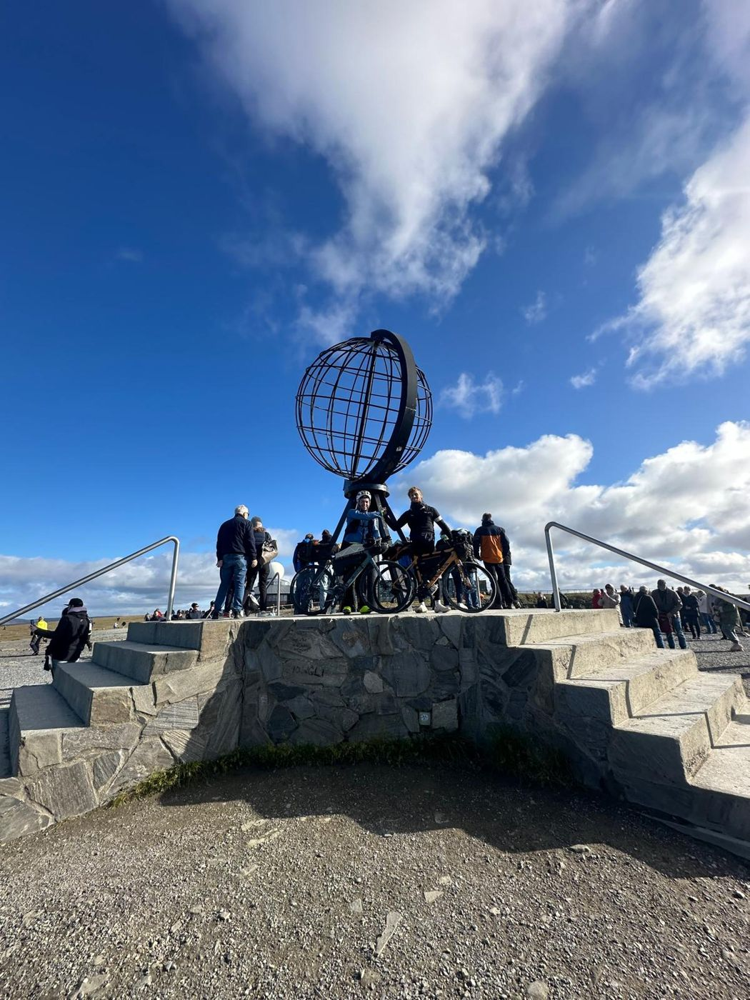
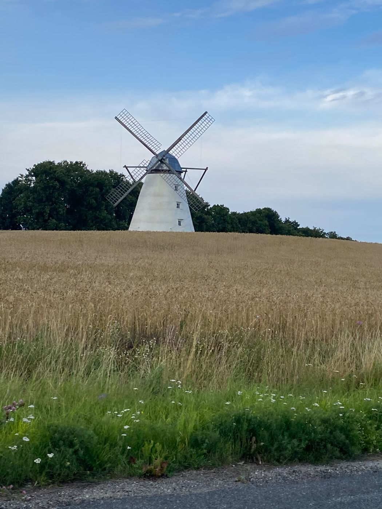
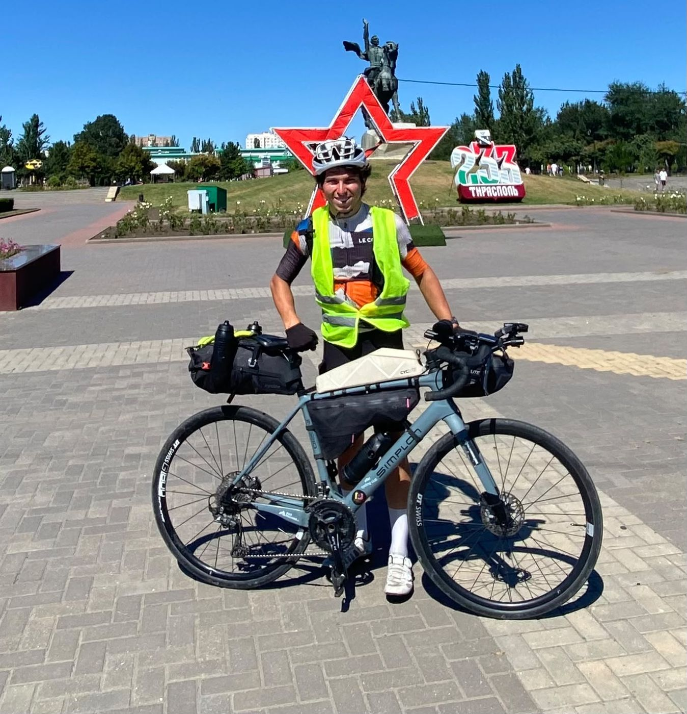
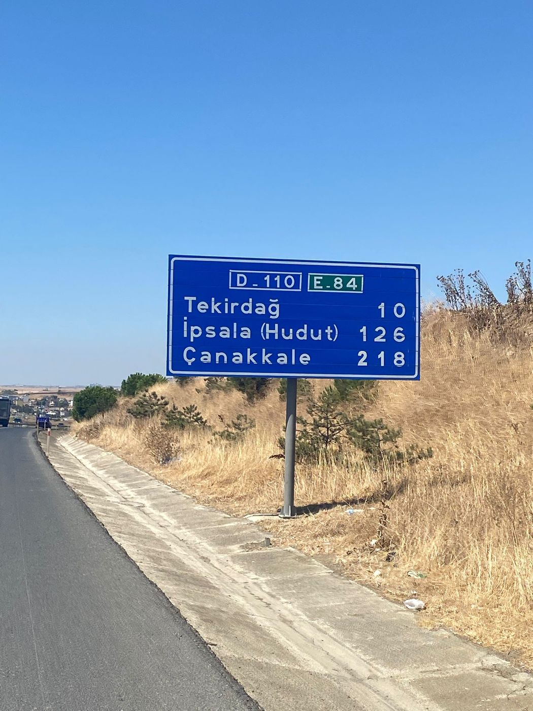
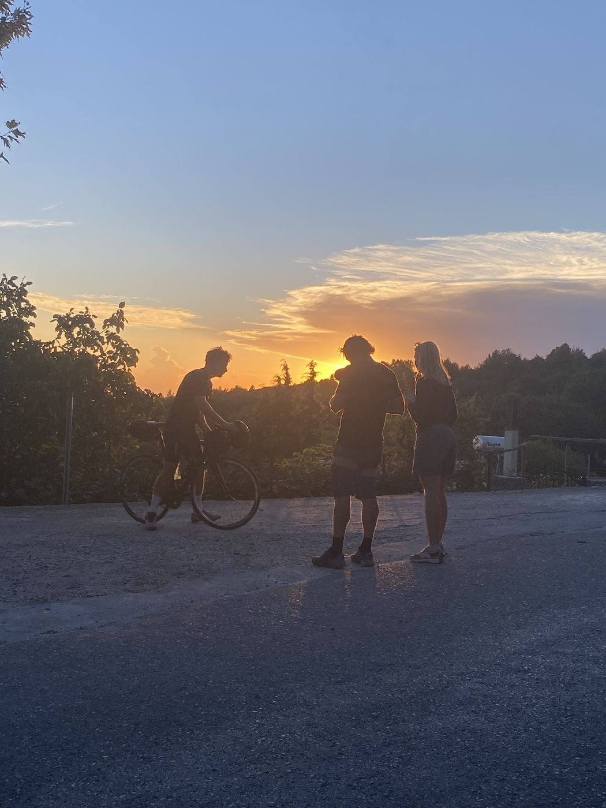
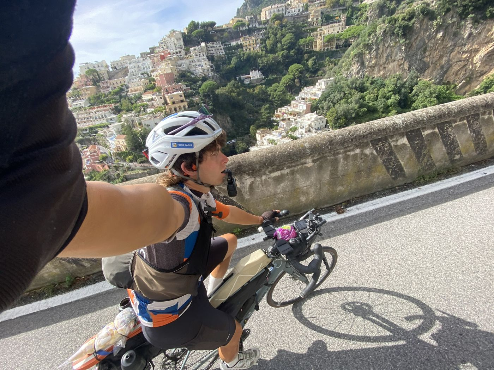
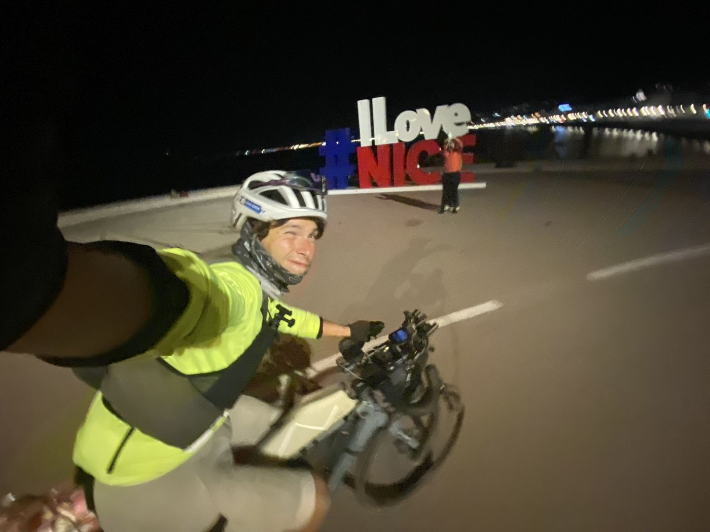

Around Europe
Starting in Amsterdam, along the coasts and borders around the entire continent, leaving out Ukraine and Russia. On a modified road bike, with a tent, an action cam and new encounters every day.
My goal: to be the first and youngest person to ride around Europe on these roads by road bike. Keep scrolling and ride the route with me.
To the North Cape

The North Sea coast, Skagen, Sweden and around 4,000 km of Norwegian fjords up to the northernmost point.
Along the Russian border

From Kirkenes down to Helsinki, by ferry to Tallinn and on through the Baltics.
From Poland to Tiraspol

Poland, Slovakia, Hungary, right across Romania to Moldova and Transnistria. This is where I first noticed all the street dogs.
Arriving in Istanbul

Down the Black Sea coast and through Bulgaria to the Bosphorus.
To Mount Olympus with a film crew

From Thessaloniki, BR PULS followed me for three days. One day I rode 450 km non-stop with 4,500 m of climbing and hardly any sleep.
All the way down the boot

Through Albania, Montenegro and Croatia, then all the way down Italy. I slept in an apple orchard and with families who took me in on the spot.
Côte d'Azur

From the Italian Riviera via Nice and Marseille to the Spanish border, often riding deep into the night.
Spain’s Mediterranean coast
More than 26,000 km done, almost four fifths of the loop. Check the live tracking to see exactly where I am.
Back to Amsterdam
On to Gibraltar, through Portugal, up the Atlantic coast to the Pyrenees, France, Belgium and back to the start. The goal: back in Amsterdam before Christmas.